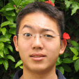
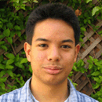
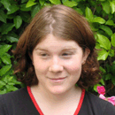
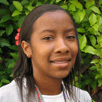
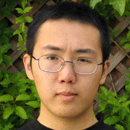
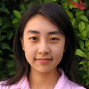

|
Biographies  Christopher K. Chan
Hey, I'm Chris. Like all but one of the interns, I graduated from high school (good ol' Monte Vista in Danville) the Friday before I started at MSI. And, like the other interns, I won't hesitate to tell you just how awesome and how life changing these past eight weeks has been. I came to the lab with more than a few stereotypes about the lab-coat life. The first is that I'd be relegated to the prestigious glassware-washer position, left to dispose of odd-smelling chemicals and alien organisms. To my surprise, we were given many responsibilities, even leeway to pursue minor experiments; in the process, we upped daily glassware usage fivefold, driving the full-time lab assistants insane. I also expected the scientists to be more like grownup Steve Erkels (ok, MSI does have a few), not geniuses riding motorcycles, jamming to Third Eye Blind. Boy did I work with some cool people. This was an once-in-a-lifetime experience, and it has persuaded me to pursue a certificate in bioengineering at Princeton in the fall.  Omar Narvaez
My name is Omar Narvaez, and I am a recent graduate of El Cerrito High School. In the fall, I'm going to the University of California, Berkeley as an undeclared major in the College of Natural Resources. I spend most of my time (when not involved with school) playing music either on the piano or my trumpet, fiddling around with my computer, or socializing with my friends. Although many people can very accurately point out their favorite movie, book or song, I have such a wide variety of tastes that this is a fairly difficult task for me. I applied for this internship mainly because I wanted to get a feel for the laboratory. My last summer was spent doing field work in Arizona and I wanted to be able to get a first hand look at what both sides of the scientific experience are like. From this internship I've personally confirmed the saying that anyone can be a scientist and I also now have seen how the lab environment is not entirely what one would expect it to be. Allison Roberts
My name is Allison Roberts. I recently graduated from Berkeley High
School, in the fall I will be attending The University of Chicago. I
plan to major in biology. I really enjoy photography. I'm also
interested in music, I played the bass for several years but
unfortunately haven't had much time for it recently. A few of my
favorite bands and musicians include; The Cure, the Beatles, The
Smiths, Thought Riot, Bad Religion, Depeche Mode, Joni Mitchell, The
Faint, Creedence Clearwater Revival, etc. I also like to read, a few of
my favorite books are Catch-22, The Jungle, Bastard Out of Carolina,
The Catcher in the Rye, and Beloved.
I applied to this internship because I plan to major in biology and
have an interest in research. The internship sounded like a great way
to gain some lab experience and get a feel of what a research lab is
like. I think it will be incredibly helpful in the future to know some
of the basics of lab work. It's been really interesting working around
so many scientists. In addition to learning the basics of lab work like
I hoped I would, I've learned a lot about how to do database research
and how to read scientific articles. And, of course, I've learned a lot
about the specific proteins that we're working with.
 LaKeysha Renae Spears
My name is LaKeysha Renae Spears. I recently graduated from Richmond High
School in the West Contra Costa School District. At Richmond High School I
participated in Leadership, Human Service & Health Academy, California Scholarship
Federation, Prep Club, Youth Together, and lots of community service. In the fall
of 2004 I will be attending UC Berkeley majoring in Nutritional Sciences. Previously
I had the opportunity to do an internship at Kaiser. This summer I was informed of
another internship here at MSI. Because I might be interested in science I wanted
to have the opportunity to experience all types of careers in the science field. So
that's why I decided to apply at MSI. While here I learned so much. For one I learned
the yeast pathway and how to pipette. In my spare time I enjoy going shopping and
spending time with my family. My favorite movie is Soul Food because it really hits
home. One of my favorite quotes that have helped me make it this far is If I can do
it, than you can do it! Later in life I see myself maybe in my own dental practice
known as Lakeysha's Family Dental. Hopefully I will one day have the opportunity to be
your dentist.
 Xiao-Yu Fu
My name is Xiao-Yu Fu, and I'll be graduating next year (2005) from Middle College High School in San Pablo, CA. I enjoy biking, hiking, mentoring, and building robots. And biology, of course.
I'm the first non-high school graduate at this internship. I applied to get a better understanding and some experience in real lab work and projects, and it's exactly what I got. This year we've been running SDS-PAGE gels and doing Western Blots, optimizing protein production, and purifying protein--the main required experience for a new technician in a protein lab. I worked with some extremely talented scientists, found out what's so great about yeast, and had a fun time. For future interns: work hard, ask questions, and find something that interests you--you won't regret it one bit.  Irene Wong
Hi, my name is Irene Wong. I am a recent graduate from University of
California, Berkeley, where I double-majored in Japanese and Molecular
& Cell Biology. This summer, I worked at the Molecular Sciences
Institute assisting a team of five high school interns on their science
projects. The interns used bioinformatics tools to research on
proteins involved in the yeast pheromone response pathway, and
conducted experiments to purify several of the pathway proteins. It was
a lot of fun for me to explain to them theories and lab techniques
related to biochemistry, an area in science that is of great interest
to me; the job also allowed me to gain valuable experience in teaching. |